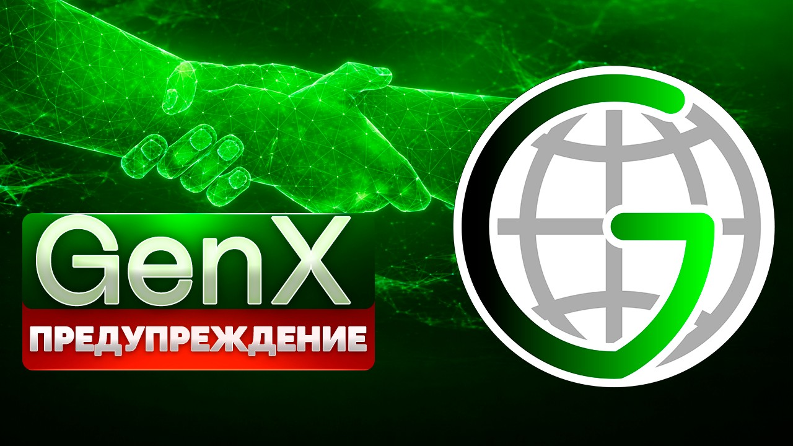

ПРЕДУПРЕЖДЕНИЕ!
Регистрация в телеграм-боте: @GenXXrobot
«Есть только два способа прожить свою жизнь.
Первый - так, как будто бы чудес не бывает.
Второй - как будто бы всё на свете – чудо»
Альберт Эйнштейн
Мир плох? Что ж – сделай его лучше!
Российский современник

Для начала посмотрите это видео:
Посмотрели? Про кого это? Про блох? Или про нас? Рождённых в банке?
Внимание! Глобальная Система Взаимопомощи, или просто GenX (Global Energy Network, в которой под «энергией» подразумевается энергия людского единства, – объединение наших разрозненных микрокапиталов в единое поле, в единый вектор, – а «икс» как умножение, усиление нашего сплоченного потенциала, синергия) – это неформальное объединение людей со всего мира. В GenX одни люди безвозмездно переводят другим людям свои средства лишь в надежде спустя время получить больше помощи, чем они оказали сами.
Участие в GenX сопряжено с абсолютным риском: Вы можете перевести свои средства другому человеку (участнику GenX), а Вам могут так ничего и не перевести без объяснения причин! Помните об этом всегда.
Я не даю Вам никаких гарантий ни в скрытой, ни в явной форме, что Вы вообще что-то получите! Я не даю никаких обещаний! В GenX нет условий срочности и возвратности, нет никаких договоров (Вы безвозмездно переводите свои средства напрямую другим людям, что не запрещено законом).
У GenX нет юридического лица, соответственно, нет и единого счета, куда стекаются все средства участников, – здесь только люди (участники GenX), которые безвозмездно переводят друг другу свои средства: со своего банковского счета напрямую на банковский счет другому участнику, с криптокошелька напрямую на криптокошелек другому. Что, повторяю, абсолютно законно! Да это в принципе нельзя запретить никаким законом безвозмездно переводить свои средства другим людям.
Система Взаимопомощи в чистом виде!
Здесь я просто пишу и высказываю своё личное мнение, делаю какие-то предположения, делюсь своими мыслями и советами – ничего не гарантирую и не обещаю, не оказываю никаких услуг и ничего никому не пытаюсь продать. И вообще, призываю всех поскорее отсюда бежать. Зачем Вам кому-то помогать!? Скорее отсюда бегите и никогда сюда больше не возвращайтесь! И НЕ УЧАСТВУЙТЕ в GenX!
Не убежали? Ну что ж. Читайте дальше!
Или нет. Вот ещё что. Небольшое отступление.
Прежде всего. Для информации. Мы так и живём до сих пор в рабовладельческом обществе. Как и тысячи лет назад. Ничего с тех пор по сути не изменилось. Разве что узы теперь экономические. Финансовые, если быть точнее. Вот и вся разница. А в остальном − то же самое всё. Есть рабы, есть Хозяева. Хозяева - это те, кто печатает деньги. Удивлены?
Далее. Что такое деньги? Да ничего! Nihil. Фантом. Пустота! Просто фантики, разноцветные, красиво оформленные бумажки со всякими там водяными знаками, гербами и картинками. (Обычно портретами великих людей. Так солидней. :-)) Они абсолютно ничем не обеспечены, кроме веры рабов в их ценность, и печатаются Хозяевами в любых количествах и по своему усмотрению.
Эти фантики Хозяева раздают рабам потом как «плату за труд». И ещё отечески поучают их при этом с серьёзным и значительным видом, что «деньги-де надо зарабатывать − ЧЕСТНО!» А рабы − послушно внимают. Зомбированные с пелёнок разного рода "правильными" учебниками, книжками, фильмами, средствами массовой информации, вообще всей этой гигантской, отлаженной и безжалостно-эффективной государственной машиной для промывания мозгов (в конце будет ссылка на видео, в котором главный банкир нашей страны во всём этом признается). Ничего другого рабы не знают, и им кажется, что так устроен мир, а иначе и быть не может. Но иначе быть − может!!
Что такое "финансовая пирамида"? Почему "пирамиды" преданы анафеме везде, во всех без исключения государствах? Даже в самых что ни на есть лояльных, свободных и демократичных? Почему с ними так безжалостно, упорно и последовательно борются? Азартные игры, букмекеры, наркотики в некоторых странах разрешены! но "пирамиды" запрещены − везде! Повсеместно. Почему так? Есть в этом нечто прямо-таки загадочное и мистическое. Никогда не задумывались?
Ну так, почему? Потому что «пострадают люди»? Ерунда!! Кого интересуют «люди»? Это быдло, эта жрущая и размножающаяся протоплазма, это многомиллиардное человеческое стадо! Эти бессловесные, забитые и покорные рабы! «Пострадают» они там или нет. Да кого это вообще волнует?!
Не говоря уж о том, что с какой стати они пострадать-то должны? Всего лишь очередной миф, один из очень и очень многих, из серии «честного зарабатывания денег». Что люди-де в "пирамиде" обязательно должны − «пострадать». А сама "пирамида" − рухнуть! (И когда же? Когда весь мир охватит? Ну, значит, пока у Вас есть хоть один неохваченный знакомый − спите спокойно. Да и это неверно. Всё равно не рухнет! Даже ещё устойчивей станет. :-))
Так почему же тогда всё-таки? Откуда такая ненависть и столь яростное неприятие? А? Сказать? Открыть уж Вам эту самую главную и страшную буржуинскую тайну? Только − тс-с-с!.. Никому ни слова! Договорились? Ладно, ну, тогда слушайте. :-))
ПОТОМУ ЧТО "ПИРАМИДЫ" ПРОИЗВОДЯТ… ДЕНЬГИ!!! Да-да-да, именно так! ДЕНЬГИ!! Из ничего, из воздуха! Так же точно, как из ничего, из воздуха производят их и сами Хозяева. И тоже при помощи "пирамид"! Доллар является "пирамидой" вовсе не случайно! Других механизмов для производства денег попросту не существует. Вообще! Только "финансовые пирамиды". Не верите? Тогда назовите мне хоть одну мировую валюту, "пирамидой" не являющуюся. Хоть одну-единственную! Евро?.. фунт?.. юань?.. А?.. Швейцарский франк, может быть?.. Что?! Те же российские власти охотно ругают доллар, но скромно умалчивают при этом, что и рубль − такая же в точности "пирамида". Ничем не лучше. (Да хуже даже! На порядок. Поскольку рубль базируется на долларе. "Пирамида" на "пирамиде". :-))
Да, "пирамиды" производят деньги. А это позволено только − Хозяевам. Это их святая и неотъемлемая прерогатива и их непреложная монополия. Право на производство денег и делает их − Хозяевами. А тут их производят − рабы!!!
В результате всё рушится. Рвётся мгновенно вся та липкая паутина лжи и лицемерия, которая заботливо, тщательно и неустанно опутывает человека ежеминутно, ежесекундно, с самого момента его рождения и до самой смерти. Пелена спадает. Морок рассеивается. Человек обнаруживает вдруг, что клетка − распахнута! Он − свободен! Сначала он просто изумляется и не верит сам себе: как это он получает деньги просто так, задаром, ни за что? И ему не надо больше сидеть в этой клетке? «Честно работать?» Этого же не может быть в принципе, это невозможно! Ему всю жизнь с самых пелён внушали, что это невозможно!! Что надо трудиться!.. работать в поте лица!.. (на кого? :-)) зарабатывать тяжёлым трудом!.. «честно!»... Это правильно, это справедливо! И только тогда ты что-то получишь. Что-то тебе дадут. (Кинут подачку! От щедрот. :-)) А теперь вдруг выясняется, что − не надо?! Что это совсем даже и не обязательно?! Как же так??!!.. Затем он начинает думать. Так, значит, деньги вовсе не мерило труда? Раз их могут просто раздавать, разбрасывать, дарить по своему желанию? И мир от этого не рушится! А что же они тогда? Если не мерило труда?.. Да неужели же это… просто бумажки?! Просто − фантики??!! Затем он осматривается вокруг и видит рядом людей, всё так же тупо и монотонно, не поднимая головы, работающих в соседних клетках… за эти бумажки… за эти никчёмные фантики… Людей, ещё вчера бывших его друзьями, близкими… А сегодня их разделяет пропасть. Они по-прежнему рабы, а он − уже нет! Он вкусил запретного плода − свободы! Он узнал, что это такое − чувствовать себя свободным. Чувствовать себя − Человеком! И этого он уже никогда не забудет.
Иными словами, "пирамиды" делают людей − Людьми. Они делают нас − СВОБОДНЫМИ! Они производят СВОБОДУ! Генерируют, несут её! Людям. Обычным, рядовым, простым людям (а уж как люди распорядятся этой свободой, – другой вопрос). Это и есть первопричина. Всего! Именно поэтому-то "финансовые пирамиды" так боятся и ненавидят. Хозяева. В этом-то и вся суть.
P.S. Впрочем, неспроста я "финансовую пирамиду" везде в кавычки заключаю. Это просто для понимания, – словосочетание удобное, которое вроде как у всех на слуху. Кстати говоря, в отличие от России и стран СНГ, в правовом поле развитых стран уже давно есть четкое определение «финансовой пирамиды», квалифицирующим признаком которой является обещание повышенной доходности (выше базовой ставки ЦБ). Именно поэтому GenX де-юре под это определение не подпадает, – ведь я не даю никаких гарантий и обещаний, а просто высказываю свои предположения.
В то же время уже ни для кого не секрет, что все без исключения привычные нам финансовые институты − банки, страховые, пенсионный фонды и пр. − «финансовые пирамиды» в чистом виде! Законны они только потому, что принадлежат Хозяевам. Которые и пишут законы.
🎯 Целью Глобальной Системы Взаимопомощи GenX является создание неформального сообщества людей по всему миру, которые помогают друг другу своими свободными деньгами исключительно на доверии. Без формальных договоров и бюрократии. «Народный банк», в котором деньги работают на людей, а не люди на деньги. Без посредников, без кредитов, без депозитов – без ростовщиков! Система, в которой люди за счет собственных средств обеспечивают друг другу базовый безусловный доход – уверенность в завтрашнем дне! Сегодня помог ты – завтра помогут тебе.
GenX – Генерируем деньги на доверии!
ПРЕДУПРЕЖДЕНИЕ!!!
Перед добровольным и безвозмездным оказанием помощи ("покупкой" абстрактных GenX'ов) каждый участник обязан ознакомиться с этим предупреждением!
ОСТОРОЖНО!
Здесь люди БЕЗВОЗМЕЗДНО переводят друг другу свои деньги!
Участвуя в GenX, Вы крайне рискуете, поскольку безвозмездно переводите свои средства другим людям. То есть Вы можете перевести свои средства, а Вам могут не перевести средства вообще без объяснения причин. Помните об этом всегда!
В GenX нет никаких гарантий и обещаний ни в явной, ни в скрытой форме! Нет никаких договоров! Нет никакой организации! Нет никакого привлечения денежных средств и (или) иного имущества! Нет никаких вложений! Никакой предпринимательской деятельности! Никакой доходности! Никаких выгод и прибылей! Никакой инвестиционной деятельности! Нет государственной регистрации и, следовательно, юридического лица тоже нет! Нет единого счета, на который стекались бы все деньги! Нет никаких операций с ценными бумагами, никаких отношений с профессиональными участниками рынка ценных бумаг, никаких ценных бумаг Вы не приобретаете! (А они Вам нужны?) Нет вообще ничего!! Я просто рекомендую людям добровольно и безвозмездно помогать друг другу своими свободными личными средствами.
Следовательно, в GenX люди со всего мира добровольно и безвозмездно переводят свои средства (рубли или криптовалюту) другим точно таким же Людям, оказывая им посильную финансовую помощь в столь непростые времена. Безо всяких гарантий, обязательств и обещаний — просто переводят и всё! Это же их средства, – частная собственность, — вот люди и делают с ними всё, что пожелают.
Одни люди переводят свои средства другим людям. Напрямую: с карты на карту, с криптокошелька на криптокошелек. Безо всяких договоров, условий срочности и возвратности и пр. — без гарантий, обязательств и обещаний. Так они помогают друг другу в это сложное время. Никаким законом такие переводы запретить невозможно в принципе! Ибо тогда нужно будет запретить частную собственность. И никаким налогом такие переводы не облагаются, поскольку никаких источников дохода здесь НЕ-Е-ЕТ!!! Нет, нет и нет! И быть не может. В принципе. Во веки веков. Аминь. Ну, усвоили?
Я не даю Вам никаких гарантий и никаких обещаний. Ни в явной, ни в скрытой форме. (В отличие, к примеру, от тех же банков. Которые — дают! Охотно. Что никогда не разорятся)
Вообще говоря, любые гарантии в этой жизни — это заведомая ложь. Где, скажем, гарантии того, что завтрашний день вообще наступит? Как же тогда можно давать все остальные гарантии? Какова их цена, если мы можем умереть в любой момент по бессчетному количеству причин?
Не создаю ошибочных представлений, что Вы здесь можете быстро обогатиться. Наоборот, потеряете всё на хрен!! Вы же свои средства другому точно такому же человеку добровольно и безвозмездно переводите — оказываете ему посильную финансовую помощь. Всё! Забудьте о них!! С этого момента это его средства, а НЕ Ваши!! Вам могут не перевести деньги без объяснения причин! Повторяю в который раз. У Вас теперь есть только абстрактные GenX'ы, «курс» которых отражает лишь Вашу возможность запросить финансовую помощь, не более того. Никто Вам не гарантирует, что эта помощь будет оказана. Ибо таких гарантий не существует в природе. Честно и прямо Вам об этом сообщаю.
В GenX нет никаких правил. Единственное правило: правил нет вообще! Даже если Вы будете чётко следовать всем моим этим советам и рекомендациям, Вы всё равно можете остаться без денег: Вам средства могут так и не перевести, помощь Вам могут так и не оказать. Безо всяких на то причин и объяснений! Помните об этом всегда. И участвуйте свободными деньгами, которые Вам не жалко безвозмездно отдать другим людям.
По всей видимости, я даже и не вполне вменяем. Ненормальный! (Был бы нормальным, стал ли бы я всё это затевать?)
По заверениям всех абсолютно ведущих финансистов, экономистов, экспертов и пр. и пр. такую высокую "доходность" («Курсы» абстрактных GenX'ов – ПРЕДПОЛОЖИТЕЛЬНО только растут темпом от 20% в месяц!) обеспечить невозможно в принципе, и всё это мошенничество чистой воды и «наглая и бесстыдная» афера.
Участвовать в которой не следует ни в коем случае и ни при каких обстоятельствах!!! Так вот послушайте умных людей — НЕ УЧАСТВУЙТЕ ЗДЕСЬ! НЕ переводите никому свои средства!
Как всё это работает — я и сам не знаю и не ведаю и «объяснить» ничего не могу. Хрен его знает как! Да и работает ли вообще?! Неизвестно. Могу лишь только предполагать.
Как безграмотный Аладдин, который нашёл волшебную лампу. Потёр − явился джинн. Выполнил все желания. И опять в лампу спрятался. Но откуда этот джинн явился и какова его природа (и как он в этой лампе вообще умещается-то, прах его побери?!) — Аладдину неведомо.
Зачем всё это сообщаю? А низачем! Зудит. Пришла идейка, хочется же высказаться. Показать, какой я вумный. «Ну, сумасшедший! Что возьмёшь?»
Но Вы-то, Вы-то — здравомыслящие ведь люди? Вы-то — не втянетесь! Не дадите себя втянуть!! Ведь — нет? Не дадите? Правда?
И вообще, я лгу. Знаете этот парадокс? Если я лгу, то я говорю правду, а если я говорю правду, то я лгу. Утверждение одновременно и истинное, и ложное. Знаменитый парадокс лжеца!
Короче говоря. Я Вас призываю, убеждаю, упрашиваю и умоляю:
ДА НЕ УЧАСТВУЙТЕ ВЫ В ЭТОЙ ПРОКЛЯТОЙ GenX!
ПОВТОРЯЮ РУССКИМ ЯЗЫКОМ И В ТО САМОЕ УХО, В КАКОЕ СЛЕДУЕТ:
НУ ЕГО НА ФИГ!
ЖИВИТЕ ВЫ И ДАЛЬШЕ СЕБЕ НА ОДНУ ЗАРПЛАТУ!
НЕ УЧАСТВУЙТЕ! НЕ УЧАСТВУЙТЕ! НЕ УЧАСТВУЙТЕ!
НЕ! НЕ!! НЕ!!!
БЕГИТЕ КАК МОЖНО СКОРЕЕ С ЭТОГО ТЕЛЕГРАМ-БОТА/САЙТА/БЛОГА/ТЕЛЕГРАМ-КАНАЛА/ И НИКОГДА БОЛЬШЕ СЮДА НЕ ВОЗВРАЩАЙТЕСЬ!!!!!
ВАМ ВСЁ ЯСНО?
Если же Вы тоже сумасшедший и после всех этих моих предупреждений, убеждений, упрашиваний и умоляний… умолений?.. всё же решили безвозмездно перевести свои средства другому незнакомому человеку и таким образом поучаствовать в GenX (не верю просто, что такие найдутся!), то читайте мои рекомендации, которые мы называем «правила», после чего связывайтесь с консультантом через телеграм-бота https://t.me/GenXXrobot
P.S. Ах, да! Действует GenX абсолютно ЗАКОННО. Повторяю ещё раз — люди добровольно и безвозмездно переводят свои средства (рубли или криптовалюту) другим точно таким же людям. Просто так! Безо всяких гарантий, обязательств, обещаний, без условий срочности и возвратности и без каких-либо формальных договоров. Это же их частная собственность, вот они и делают с ней всё, что пожелают и что посчитают нужным. Более того, деятельность участников GenX по оказанию взаимопомощи не просто законна! Она регламентируется и поощряется главным законом РФ, что, в общем-то, предельно логично — Конституцией Российской Федерации, статьёй 39, частью 3 — читайте там Внимательно: "Друг другу надо помогать!" – однозначно говорит главный закон нашей страны. Одни люди оказывают другим посильную безвозмездную финансовую помощь, только и всего. А значит, никакого привлечения средств или иного имущества тут заведомо нет! Все эти статьи УК РФ мимо. Зарубежные участники GenX на свои средства добровольно приобретают криптовалюту и безвозмездно переводят её другим людям. Всё это законно! Поскольку закона не нарушает. Сам я ничего и никого никуда не привлекаю — я лишь открыто говорю о том, что в сегодняшней непростой экономической ситуации друг другу необходимо помогать! Вот и сам помогаю — советами, рекомендациями и консультациями.
P.S. У всех наверняка возникает вопрос: а на фига всё это нужно лично мне, Данилу Юсупову?? Какова моя цель? Объясню! На самом деле всё очень корыстно. И даже примитивно. Но нет, это не деньги! Как Вы уже успели подумать. Деньги при таких масштабах дел уже не катят. Риск слишком велик, чтобы делать это только из-за денег.
Жизнь научила меня, что нельзя быть богатым среди бедных, честным среди врунов, образованным среди безграмотных, здоровым среди больных, смелым среди трусов, счастливым, когда тебя окружают несчастные люди. Нельзя! Ведь все Мы взаимозависимы! И не только Мы. Всё вокруг, весь этот мир пронизан принципами взаимозависимости! Всё взаимосвязано на всех уровнях. И всё всегда стремится к равновесию. Поэтому, если сам хочешь жить в достатке, то прежде нужно этот достаток обеспечить окружающим тебя людям. Ведь ты часть этого общества – в этом случае ты и сам будешь в достатке просто по определению. Известный рабочий принцип крайне прост – Относись к другим так, как хочешь, чтобы относились к тебе.
Понимаете, голодный не может подавать, ибо нечем! − не может человек о духовном думать и развиваться, пока голоден. Для начала людей нужно накормить. Обеспечить их базовые материальные потребности. Чтобы в дальнейшем у них высвободилось время на то, чтобы стать образованными, самодостаточными, смелыми, здоровыми, честными и богатыми как материально, так и духовно! Счастливыми Людьми!! И я покажу всем, что, взаимодействуя определенным образом, ДЕЙСТВУЯ ПРИ ЭТОМ ЧЕСТНО И ОТКРЫТО, даже сегодня можно Жить по-Человечески! А не выживать, влача гнусное рабское существование. Ведь только тогда и сам я стану − Человеком. Мне всего лишь хочется, чтобы меня окружали Разумные Люди, а не затюканные покорные рабы. Хочется простой Человеческой Жизни сегодня и сейчас, а не когда-то там (в "загробной жизни").
Вы сами-то не устали от всего этого тотального лживого ужаса? А? Не устали внушать себе жалкий рабский принцип – "от меня же ничего не зависит"? Не опостылело терпеть всё это кредитно-ипотечное унижение, участником которого всем нам приходится «невольно» являться? Не устали своими же руками рыть себе яму, поддерживая эту несправедливую систему!?.. "Выхода нет!" Ещё как есть! Вот он!! Альтернативная система! Честная и открытая! АНТИСИСТЕМА!! Глобальная Система Взаимопомощи GenX.
Манипулировать людьми, превращая их в трусливых покорных рабов, не задающих лишних вопросов, очень просто. Чтобы потом их использовать и обворовывать. Так Хозяева с рабами и поступают. Гораздо сложнее сделать людей Свободными. (Так же как думать о чем-то хорошем гораздо сложнее, чем о плохом. Плохие мысли будто сами собой приходят. Никогда об этом не задумывались? Почему так происходит?.. Так ведь, чтобы думать о чём-то хорошем, нужно прикладывать усилия: включать воображение, логику и пр. Вообще, чтобы поверить во что-то хорошее и доброе, нужно самому совершать добро! Нужно действовать! Создавать добро для других. А не сидеть сложа руки, оправдываясь, мол, "да от меня же ничего не зависит". Ещё как зависит! Всё, что Вы видите вокруг, – всё, чем Вы пользуетесь в повседневной жизни, – создано людьми, которые действовали, несмотря ни на что. Действовали вопреки! Не ища одобрения и позволения третьих лиц! Вопреки всем этим никчемным насмешкам "у тебя ничего не получится", "аха-ха, ну ты и сумасшедший" и т. п. Тащить на дно проще, чем наверх).
Да, освободиться от рабства трудно, но − возможно! Так же, как возможна вся эта существующая лживая система, эта треклятая финансовая рабская антиутопия (между прочим, "зло" добивается результатов в т.ч. потому, что добро смиренно бездействует), так и возможна Антисистема − честная и открытая. Свободная! Человеческая!! И за неё стоит бороться. Конечно, изменить мир в одиночку нельзя. Изменить можно только себя, своё отношение, свои принципы, взгляды и мировоззрение. Конструктивно взаимодействуя друг с другом и осознавая тотальную взаимозависимость.
Именно поэтому наша Глобальная Система Взаимопомощи называется Global Energy Network – где под «глобальной энергией» подразумевается сила людского объединения! Сила объединения наших микрокапиталов, которые в GenX работают на Людей, а не на Хозяев-банкиров. GenX – Генератор доверия, энергия единства!
А в подтверждение написанного посмотрите видео, в котором главный банкир России фактически во всём сознается:
И помните, что в этой жизни всё зависит от каждого из Нас. Аминь.
Регистрация в телеграм-боте: @GenXXrobot